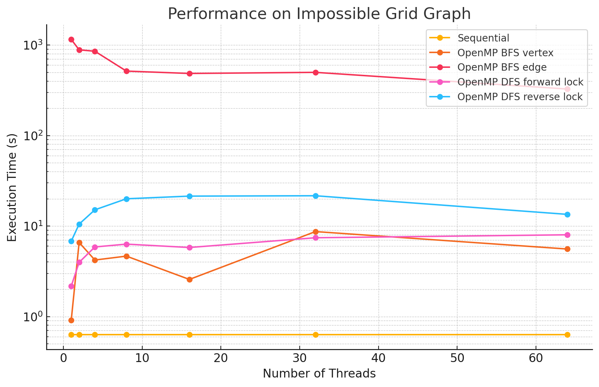
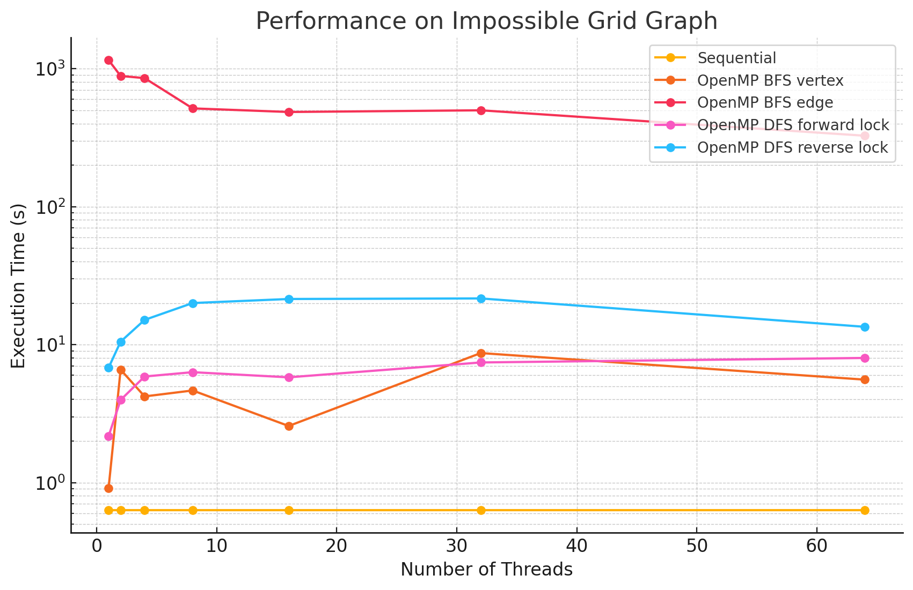

15-418 Final Project Milestone Report
By Connor Mowry (cmowry), Wenqi Deng (wenqid)
Summary of Progress
Our project focuses on parallelizing Dinic's max-flow algorithm in its BFS and DFS phases using OpenMP and MPI to enhance performance. Over the past few weeks, we have made significant progress in implementing the sequential and OpenMP versions of parallel Dinic's algorithm and measuring their performance.
We started by implementing and testing the sequential version of Dinic's algorithm, establishing a solid foundation for subsequent parallelization. In the first phase of parallelization using OpenMP, we focused on the BFS component, constructing the layer graph in parallel and exploring strategies at different granularities, such as parallelizing by vertex and edge, to balance load and optimize performance.
For the DFS phase, where blocking flows are computed, we addressed dependency issues of capacity updates by implementing two approaches: locking edges along paths being explored to prevent conflicts as well as allowing threads to explore freely while only updating back capacities after paths successfully reach the sink.
In addition, we have started implementing a basic MPI version to parallelize the BFS phase. In this approach, we divide the graph's vertices across different processors, with each processor exploring the vertices assigned to it. Our next steps will focus on exploring ways to reduce communication overhead and optimize the overall efficiency of the MPI implementation of BFS, and start with the MPI implementation of DFS.
Attempted Approaches
- Sequential: Basic implementation of Dinic's algorithm based on pseudocode.
-
OpenMP BFS: We parallelized the for loop in the BFS phase of Dinic's algorithm using OpenMP, incorporating a reduction operation to merge each thread's next frontier to further optimize performance.
- By vertex: We parallelized the for loop that iterates through the current level of the graph.
- By edge: To reduce load imbalance from nodes with varying numbers of edges, we attempted fine-grained task parallelism by processing individual edges in parallel.
We observed some speedup of parallelizing the BFS phase when testing on large networks. For most of the test cases, parallelizing by vertex results in better performance compared to parallelizing by edge. This is likely because the overhead of managing numerous small tasks becomes significant when there are a large number of tasks, which can slow down performance in the edge-based approach. However, we did notice that in most of the Erdős–Rényi networks, parallelizing by edge outperforms the by vertex approach. This is potentially due to large numbers of edges attached to small numbers of vertices in this model, causing load imbalance when processors work on different nodes in the by vertex approach.
-
OpenMP DFS: Parallelizing DFS is more challenging due to increased data dependency across iterations. To address this, we incorporated a lock mechanism to prevent pushing flow through paths where other threads may update the remaining capacity.
- Forward lock: In forward lock, a process locks the edges it explores as it explores them, releasing all locks once it pushes flow. Other processes cannot explore an edge that is locked by another processor.
- Reverse lock: The reverse lock mechanism is designed to address the situations where processes make no progress because all viable edges are locked by other processes. Once a process reaches the sink, it locks all edges on the path it traversed, redetermines the smallest residual capacity, and pushes that amount of flow. The residual capacities might change between when the path is explored and when the flow is pushed, but the processor may still be able to push some flow on the path as long as no edge became saturated.
Although the speedup from parallelizing the DFS phase compared to the sequential version was only slight in some test cases, we observed measurable performance improvements when running more threads compared to 1 thread. This could be attributed to the high overhead of managing a large number of locks and situations where some threads make progress that does not contribute meaningfully to the overall solution (one edge in the path later saturated by another process) in the reverse lock approach.
-
MPI BFS: In MPI, we parallelized BFS by partitioning parts of the adjacency matrix for different processes to handle. We can divide the graph by nodes (1D partition) or both nodes and edges within single nodes (2D partition).
- 1D partition: We parallelized the BFS phase by distributing vertices of graphs across different processes. At each BFS level, processes collaboratively explore the graph by exchanging information about discovered vertices through message passing. Currently, we are handling synchronization using all-gather in which all processes know all nodes in the next level. We are still working on implementing all-to-all or point-to-point communication strategies to reduce communication overhead.
Benchmarking
We measured the computation time for calculating the max flow in networks of varying models and sizes, using both GHC and PSC machines. The time is recorded in milliseconds.
On GHC Machines:
-
Small Erdős–Rényi Graph (n=128, e=15457)
1 2 4 8 Sequential 0.229 NA NA NA OpenMP BFS vertex 0.245 0.264 0.334 0.343 OpenMP BFS edge 0.425 0.505 0.529 0.389 OpenMP DFS forward lock 0.433 0.446 0.464 0.403 OpenMP DFS reverse lock 3.31 2.45 2.05 1.83 -
Small Barabási–Albert Graph (n=128, e=1694)
1 2 4 8 Sequential 0.121 NA NA NA OpenMP BFS by vertex 0.161 0.259 0.566 0.804 OpenMP BFS by edge 1.427 1.005 0.729 0.981 OpenMP DFS forward lock 0.259 0.426 0.327 0.615 OpenMP DFS reverse lock 0.540 0.269 0.302 0.337 -
Small Grid Graph (n=121, e=440)
1 2 4 8 Sequential 0.128 NA NA NA OpenMP BFS vertex 0.321 0.213 0.201 0.310 OpenMP BFS edge 1.234 0.416 0.379 0.510 OpenMP DFS forward lock 0.038 0.098 0.144 0.189 OpenMP DFS reverse lock 0.160 0.164 0.252 0.307 -
Medium Erdős–Rényi Graph (n=2048, e=3982965)
1 2 4 8 Sequential 66.7 NA NA NA OpenMP BFS vertex 68.3 54.2 51.8 50.5 OpenMP BFS edge 124.1 71.2 44.4 30.2 OpenMP DFS forward lock 162.7 116.2 93.6 83.2 OpenMP DFS reverse lock 1649.2 1460.3 1277.1 1156.3 -
Medium Barabási–Albert Graph (n=2048, e=400670)
1 2 4 8 Sequential 8.76 NA NA NA OpenMP BFS vertex 5.58 4.63 4.33 4.36 OpenMP BFS edge 84.6 48.3 29.7 20.1 OpenMP DFS forward lock 12.7 10.3 8.88 8.68 OpenMP DFS reverse lock 72.2 54.1 47.1 43.7 -
Medium Grid Graph (n=2025, e=7920)
1 2 4 8 Sequential 1.43 NA NA NA OpenMP BFS vertex 0.54 1.28 0.27 1.35 OpenMP BFS edge 149.4 90.4 60.5 44.7 OpenMP DFS forward lock 0.56 0.69 0.72 0.80 OpenMP DFS reverse lock 2.53 2.93 3.11 3.19 -
Large Erdős–Rényi Graph (n=4096, e=15934587)
1 2 4 8 Sequential 228.7 NA NA NA OpenMP BFS vertex 236.4 194.4 184.7 179.3 OpenMP BFS edge 387.4 225.0 144.7 101.5 OpenMP DFS forward lock 592.2 407.1 311.9 276.1 OpenMP DFS reverse lock 7519.04 6589.8 6536.5 6613.1 -
Large Barabási–Albert Graph (n=4096, e=1595310)
1 2 4 8 Sequential 19.7 NA NA NA OpenMP BFS vertex 19.5 16.7 16.1 16.2 OpenMP BFS edge 234.4 136.8 88.1 61.6 OpenMP DFS forward lock 46.0 35.9 28.9 28.8 OpenMP DFS reverse lock 251.8 168.2 142.8 132.7 -
Large Grid Graph (n=4096, e=16128)
1 2 4 8 Sequential 0.136 NA NA NA OpenMP BFS vertex 0.242 0.506 3.91 1.150 OpenMP BFS edge 110.2 60.8 36.4 23.2 OpenMP DFS forward lock 0.296 0.395 0.403 0.453 OpenMP DFS reverse lock 1.27 0.919 0.877 0.955
On PSC Machines:
-
Extreme Erdős–Rényi Graph (n=8192, e=63743938)
1 2 4 8 16 32 64 Sequential 1284.5 NA NA NA NA NA NA OpenMP BFS vertex 1348.2 931.3 793.8 733.3 793.4 810.5 823.8 OpenMP BFS edge 2025.3 1413.8 1223.9 817.4 879.7 954.8 771.3 OpenMP DFS forward lock 3535.5 2460.7 1841.3 1573.2 1893.9 1839.9 1791.6 OpenMP DFS reverse lock 47954 34909 31844 27034 25403 86543 86407 -
Extreme Barabási–Albert Graph (n=8192, e=6381240)
1 2 4 8 16 32 64 Sequential 160.1 NA NA NA NA NA NA OpenMP BFS vertex 158.6 121.5 103.0 100.1 124.4 149.5 151.4 OpenMP BFS edge 1753.4 1383.5 986.8 612.3 591.2 611.8 400.2 OpenMP DFS forward lock 347.2 270.4 226.3 210.6 259.4 303.2 297.5 OpenMP DFS reverse lock 3247.1 2640.3 2675.7 3345.8 3106.4 5328.0 9336.0 -
Extreme Grid Graph (n=8190, e=32398)
1 2 4 8 16 32 64 Sequential 0.453 NA NA NA NA NA NA OpenMP BFS vertex 0.735 2.509 2.55 0.828 2.31 8.83 9.27 OpenMP BFS edge 772.3 826.2 494.5 313.2 334.7 339.3 227.5 OpenMP DFS forward lock 1.62 2.94 3.53 3.77 4.34 5.89 6.78 OpenMP DFS reverse lock 5.83 8.53 10.2 11.2 15.6 16.8 16.7 -
Impossible Erdős–Rényi Graph (n=12040, e=99609033)
1 2 4 8 16 32 64 Sequential 1764.9 NA NA NA NA NA NA OpenMP BFS vertex 1825.5 1391.2 1194.6 1114.2 1168.2 1204.2 1195.7 OpenMP BFS edge 2546.9 1775.5 1564.7 1060.5 1105.2 1325.7 1124.0 OpenMP DFS forward lock 5272.2 3586.0 2567.6 2033.0 2214.6 2219.8 2063.5 OpenMP DFS reverse lock 80849 57050 51330 59283.9 42305 121861 143007 -
Impossible Barabási–Albert Graph (n=12040, e=9961472)
1 2 4 8 16 32 64 Sequential 250.1 NA NA NA NA NA NA OpenMP BFS vertex 241.0 183.3 151.2 149.1 171.5 201.1 200.2 OpenMP BFS edge 2774.0 2371.1 1732.0 934.1 933.0 946.5 626.4 OpenMP DFS forward lock 574.0 409.0 342.1 309.7 387.1 425.6 451.9 OpenMP DFS reverse lock 5254.4 4784.1 4456.0 4732.6 5173.3 10112 8030.3 -
Impossible Grid Graph (n=10201, e=40400)
1 2 4 8 16 32 64 Sequential 0.630 NA NA NA NA NA NA OpenMP BFS vertex 0.914 6.58 4.21 4.65 2.57 8.68 5.57 OpenMP BFS edge 1152.7 884.8 853.5 515.0 485.0 498.8 326.3 OpenMP DFS forward lock 2.17 3.97 5.87 6.31 5.79 7.42 8.00 OpenMP DFS reverse lock 6.80 10.5 15.1 20.0 21.4 21.6 13.45
Performance Graphs

 

Performance Analysis
From the benchmarking results, we observed that:
- In large and dense networks with more edges, parallelizing BFS in OpenMP shows measurable performance improvements that increase with the number of threads up to 16. However, as the number of threads exceeds 16, the speedup begins to diminish. This is likely due to the limited number of parallelizable tasks available, causing increased overhead from thread management and synchronization, which reduces the effectiveness of additional threads.
- In most of the test cases, parallelizing by vertex results in better performance compared to by edge. However, we did notice that in most of the Erdős–Rényi networks, parallelizing by edge outperforms the by vertex approach. This is potentially due to large numbers of edges attached to small numbers of vertices in this model, causing load imbalance when processors work on different nodes in the by vertex approach.
- Although the speedup from parallelizing the DFS phase compared to the sequential version was minimal in some test cases, there are noticeable performance improvements when running with 8 threads versus a single thread in large and dense networks. This could be caused by the high overhead of managing a large number of locks.
- For most of the test cases, especially when there is a large number of edges, the reverse lock approach performs worse than the forward lock approach. This might be due to situations where some threads make progress that does not contribute meaningfully to the overall solution. For example, certain threads might explore paths that ultimately do not lead to valid augmenting flows or encounter situations where their updates are later blocked and invalidated by other threads. These unproductive efforts waste computational resources and add synchronization overhead.
Goals and Deliverables
Original Goals and Deliverables
Our primary goal was to parallelize both the BFS and DFS phases of Dinic's algorithm using OpenMP for shared memory and MPI for distributed memory systems. We aimed to implement efficient parallel strategies for each phase, optimizing for both performance and scalability.
The original deliverables included:
- OpenMP Implementation and Optimization: Complete a parallel version of Dinic's algorithm using OpenMP, minimizing synchronization overhead and improving data locality, with performance evaluation on GHC machines at CMU.
- MPI Implementation: Develop a robust and efficient MPI implementation of Dinic's algorithm, focusing on effective inter-process communication, and evaluate its scalability on PSC machines with increasing node counts.
- Performance Analysis: Conduct a detailed analysis comparing OpenMP and MPI implementations, including speedup, cache misses, memory bandwidth utilization, and synchronization overhead.
Stretch goals included exploring extensive MPI optimizations (e.g., non-blocking communication and load balancing) and implementing Dinic's algorithm on a GPU using CUDA to explore performance gains on massively parallel architectures.
Progress and Adjusted Goals
We have made significant progress toward our original goals, particularly with the BFS phase. However, the DFS phase has proven challenging to parallelize effectively due to its dependency on capacity updates during flow computation, which limits opportunities for parallel execution.
Achievements So Far:
- Achieved measurable speedup in the BFS phase using OpenMP, with scalability analysis across multiple thread counts.
- Began exploring MPI-based parallelization of BFS, focusing on 1D decomposition and evaluating communication strategies.
- Conducted performance analysis of the BFS and DFS phases independently, identifying key bottlenecks in the DFS phase.
Updated Plan:
- Primary Focus: Complete and optimize both 1D and 2D decompositions for BFS using MPI, with comparative analysis of communication strategies (e.g.,
MPI_Alltoallvs. point-to-point communication). - DFS in MPI: If time permits, begin parallelizing the DFS phase in MPI, prioritizing correctness and initial scalability analysis.
- Performance Analysis: Expand the analysis to include performance on networks with varying sizes, densities, and models, and evaluate the impact on speedup and scalability.
Issues and Concerns
Key Concerns:
- DFS Phase Parallelization: The dependency on capacity updates during flow computation in the DFS phase introduces sequential bottlenecks, making effective parallelization challenging. This remains a significant concern for both OpenMP and MPI implementations.
- DFS in MPI: We have yet to determine an effective decomposition strategy for the DFS phase in MPI. Balancing work across processes while minimizing communication overhead will be critical but is currently unresolved.
Remaining Unknowns:
- MPI Communication Overhead: While communication overhead in BFS may pose challenges, its impact is unclear until further testing with strategies like
MPI_Alltoalland point-to-point communication. - CUDA Implementation: As a stretch goal, the feasibility of implementing BFS and DFS on a GPU remains uncertain, especially given the learning curve and the time constraints of the project.
At this stage, our main concerns center on parallelizing the DFS phase effectively and evaluating MPI strategies. We aim to address these challenges while continuing progress on BFS optimizations and other deliverables.
Stretch Goals
- Extensive MPI Optimizations: Explore advanced strategies such as non-blocking communication and optimized load balancing.
- GPU Implementation: Begin a CUDA implementation of Dinic's algorithm to compare performance with CPU-based approaches, if time allows.
Plan for Poster Session
For the poster session, we plan to showcase:
- Performance Metrics: Detailed metrics, including speedup, cache misses, memory bandwidth utilization, and the impact of synchronization, across various configurations (e.g., core counts and node setups).
- Comparative Analysis: Highlight differences in performance and scalability between OpenMP and MPI implementations, with insights into their applicability to different graph types.
- Live Demo: If feasible, provide a real-time demonstration of performance improvements on sample graph inputs.
By adjusting our focus and emphasizing BFS optimizations, we aim to deliver a robust analysis of parallelization strategies for Dinic's algorithm while addressing the challenges encountered in DFS parallelization.
Adjusted Schedule
Completed Work (Weeks 1-3)
Week 1 (Nov 10 - Nov 16)
- Implemented the sequential version of Dinic's algorithm.
- Reviewed pseudocode and lecture notes from 15-451 to ensure a thorough understanding.
- Implemented and tested the sequential version to confirm correctness.
- Milestone: Completed a functional sequential implementation that passed initial test cases.
Week 2 (Nov 17 - Nov 23)
- Began parallelizing the BFS phase using OpenMP.
- Identified parallelizable components and added OpenMP directives.
- Focused on constructing the layer graph in parallel while minimizing synchronization overhead.
- Analyzed performance on GHC machines for speedup and cache efficiency.
- Milestone: Achieved measurable speedup in the BFS phase compared to the sequential version.
Week 3 (Nov 24 - Nov 30)
- Parallelized the DFS phase using OpenMP.
- Implemented parallel path exploration for the blocking flow.
- Optimized synchronization to reduce contention and improve scalability.
- Conducted performance analysis for the BFS and DFS phases of the OpenMP implementation separately.
- Milestone: Submitted the milestone report, showcasing OpenMP results and preliminary optimizations.
Upcoming Work (Weeks 4-5)
Week 4 (Dec 1 - Dec 7)
- BFS in MPI with 1D decomposition:
- Implement BFS using MPI with a 1D decomposition strategy.
- Compare communication techniques:
MPI_Alltoallvs. point-to-point communication. - Analyze scalability and performance of each method.
- BFS in MPI with 2D decomposition:
- Explore and implement a 2D decomposition approach for BFS.
- Finalize and optimize the 2D decomposition BFS implementation.
- Compare performance metrics between 1D and 2D decomposition strategies.
- Milestone: Complete and validate both the 1D and 2D decomposition BFS implementations with comparative performance analysis.
Week 5 (Dec 8 - Dec 13)
- DFS (Blocking Flow) in MPI:
- Begin implementing the DFS phase for the blocking flow using MPI.
- Focus on initial correctness and scalability analysis.
- Poster Preparation and Analysis:
- Conduct a comprehensive performance analysis, comparing sequential, OpenMP, and MPI implementations.
- Prepare for the poster session:
- Compile speedup graphs, communication overhead analysis, and scalability results.
- Design poster with key findings, performance insights, and potential live demos.
- Milestone: Finalize the poster content and submit materials for the poster session (Dec 9 - Dec 13).
Final Week (Dec 14 - Dec 15)
- Project Wrap-Up:
- Integrate all findings into the final report.
- Emphasize key results, challenges, and insights from BFS and DFS parallelizations.
- Submit the final project report by Dec 15.